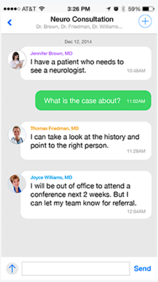
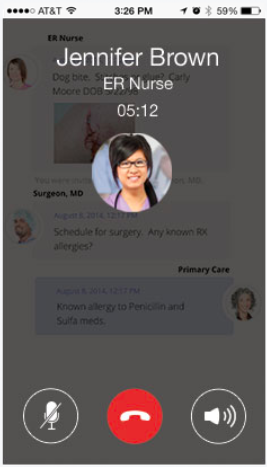

Grow Virtual Networks
Practices can increase referrals, reduce the number of phone calls and see more patients. Implement the pingmd business model that suits your practice and stand out.
Deliver
Timely Care
ACOs and Hospitals need to coordinate care with their care teams, increasing their capacity to engage with more patients and deliver timely care decisions to reduce high cost negative events. Pingmd optimizes your network and teams.
Engage with patients
via e-visit
High quality care is made convenient on pingmd. Involve your care network, your family and see how easy it is to keep track of your visit instructions and reach out to your care team in a way that they are more able to serve you when you really need it.

Expand Your
Care Network
High quality care is made convenient on pingmd. Involve your care network, your family and see how easy it is to keep track of your visit instructions and reach out to your care team in a way that they are more able to serve you when you really need it.